Lan truyền và đồ thị tính toán
Bài 02 · Học sâu
Học kỳ 1 · Năm học 2026–2027
Mục tiêu học tập
Tiên quyết
Đạo hàm một biến, nhân ma trận, MLP, ReLU, softmax và logarit ở mức nhập môn.
Sản phẩm
Đọc đồ thị, tính gradient và thực hiện một bước cập nhật MLP.
Quy ước xuyên suốt: mỗi hàng là một mẫu; trục đầu là trục lô.
MLP là một chuỗi biến đổi
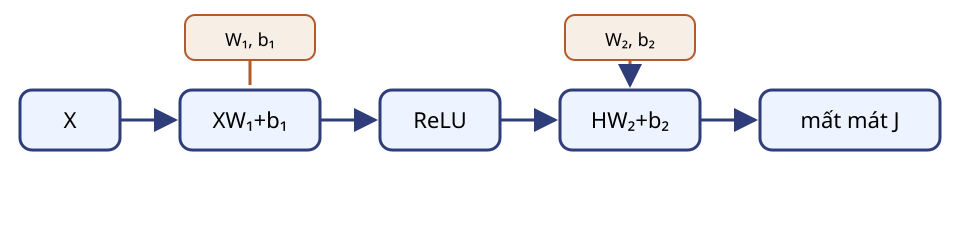
$$H=\operatorname{ReLU}(XW_1+b_1),\quad Z=HW_2+b_2.$$
Huấn luyện cần đạo hàm theo từng tham số
$$\theta\leftarrow\theta-\eta\nabla_\theta J,\qquad \theta=\{W_1,b_1,W_2,b_2\}.$$
Xuôi
Tính dự đoán và mất mát.
Ngược
Tính gradient theo quy tắc chuỗi.
Cập nhật
Đổi tham số sau khi có đủ gradient.
Đồ thị tính toán ghi quan hệ phụ thuộc
Nút
Biến đầu vào, tham số hoặc kết quả trung gian.
Cạnh có hướng
Đầu ra của phép tính này là đầu vào của phép tính khác.
Đồ thị có hướng không chu trình cho phép duyệt xuôi rồi duyệt ngược theo thứ tự tô-pô.
Tách một biểu thức thành các nút
$$f=2\bigl(xy+\max(z,w)\bigr)$$
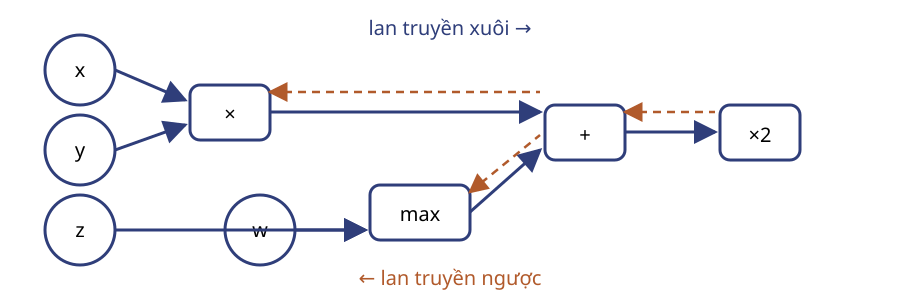
Lan truyền xuôi lưu giá trị cần cho bước ngược
$$x=3,\ y=-4,\ z=2,\ w=-1$$
| Nút | Phép tính | Giá trị |
|---|
| $q$ | $xy$ | $-12$ |
| $r$ | $\max(z,w)$ | $2$ |
| $s$ | $q+r$ | $-10$ |
| $f$ | $2s$ | $-20$ |
Quy tắc chuỗi nối các đạo hàm cục bộ
$$y=g(x),\ z=f(y)\quad\Longrightarrow\quad\frac{dz}{dx}=\frac{dz}{dy}\frac{dy}{dx}.$$
Câu hỏi: Nếu $dy/dx=3$ và $dz/dy=-2$, $dz/dx$ bằng bao nhiêu?
Mỗi nút nhân đạo hàm thượng nguồn với đạo hàm cục bộ
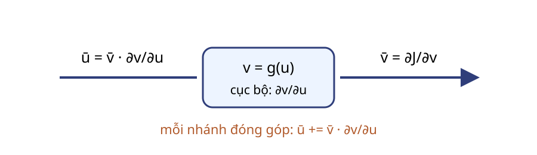
$$\bar v=\frac{\partial J}{\partial v},\qquad \bar u\mathrel{+}=\bar v\frac{\partial v}{\partial u}.$$
Cổng cộng phân phối nguyên đạo hàm
$$s=q+r,\quad \bar q\mathrel{+}=\bar s,\quad \bar r\mathrel{+}=\bar s.$$
Với $\bar f=1$ và $f=2s$: $\bar s=2$, nên $\bar q=\bar r=2$.
Cổng nhân đổi vai trò hai đầu vào
$$q=xy,\quad \bar x\mathrel{+}=\bar q\,y,\quad \bar y\mathrel{+}=\bar q\,x.$$
$x=3,y=-4,\bar q=2$ cho $\bar x=-8$ và $\bar y=6$.
Cổng cực đại chỉ truyền qua nhánh thắng
$$r=\max(z,w),\quad z=2>w=-1.$$
Nhánh $z$
$\bar z\mathrel{+}=\bar r=2$
Nhánh $w$
$\bar w\mathrel{+}=0$
Khi hòa, phải nêu quy ước; không có một đạo hàm duy nhất tại điểm gãy.
Nhiều đường phụ thuộc phải cộng đạo hàm
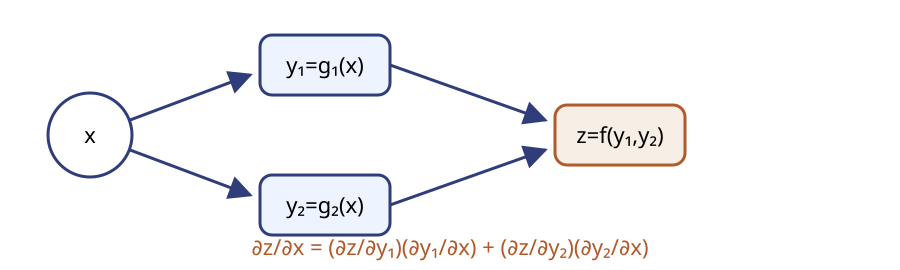
Kiểm tra trên một đồ thị độc lập
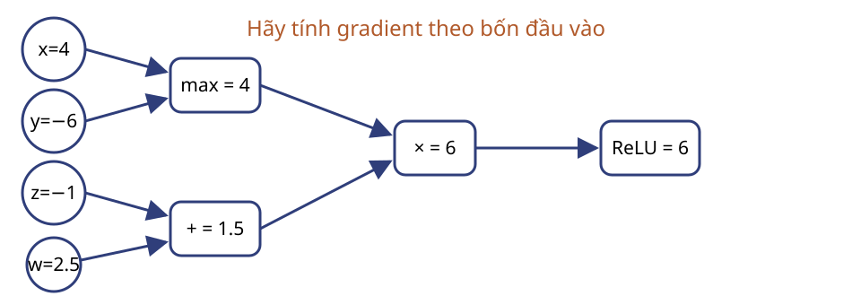
Câu hỏi: Với gradient đầu ra bằng 1, hãy tính gradient theo $x,y,z,w$.
Thuật toán lan truyền ngược
- Lan truyền xuôi theo thứ tự tô-pô; lưu giá trị trung gian cần thiết.
- Khởi tạo $\bar J=1$ và các gradient khác bằng 0.
- Duyệt các nút theo thứ tự tô-pô ngược.
- Nhân gradient thượng nguồn với đạo hàm cục bộ; cộng vào từng đầu vào.
Đạo hàm theo tensor giữ nguyên kích thước
$$U\in\mathbb R^{a\times b}\quad\Longrightarrow\quad G_U=\frac{\partial J}{\partial U}\in\mathbb R^{a\times b}.$$
Với vector, ta viết gradient thượng nguồn dưới dạng vector hàng để nhân Jacobian từ bên trái.
Tích vector–Jacobian kéo đạo hàm về đầu vào
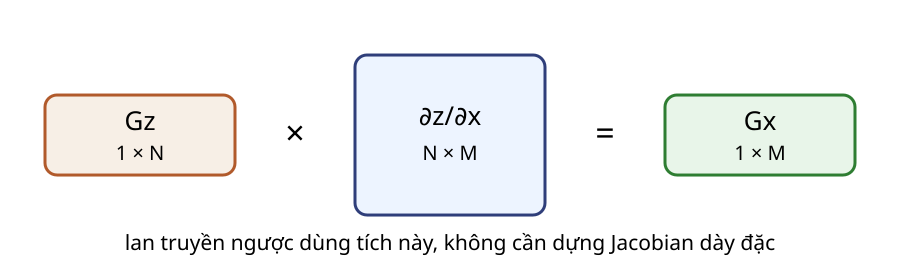
$$J_f=\frac{\partial z}{\partial x}\in\mathbb R^{N\times M},\qquad G_x^{\mathrm{row}}=G_z^{\mathrm{row}}J_f.$$
Phép toán theo phần tử có Jacobian chéo
$$z_i=g(x_i)\quad\Longrightarrow\quad \frac{\partial z_i}{\partial x_j}=\begin{cases}g'(x_i),&i=j,\\0,&i\ne j.\end{cases}$$
Vì vậy $G_x=G_z\odot g'(x)$, không cần tạo Jacobian.
ReLU dùng mặt nạ ở lượt ngược
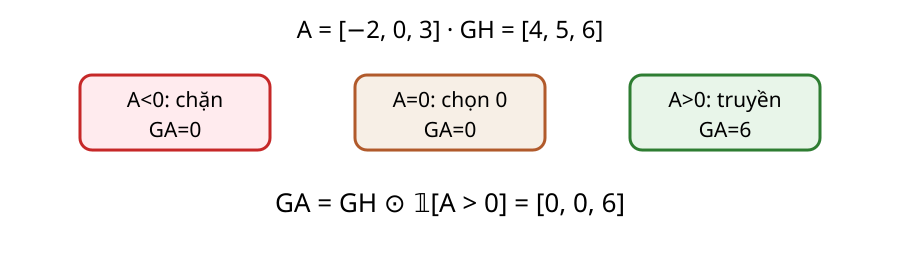
$$G_A=G_H\odot\mathbb 1[A>0].$$
Quy ước của bài: tại $A=0$, đạo hàm ReLU bằng 0, nên phần tử đó không nhận gradient.
Tầng afin theo quy ước lô theo hàng
$$X\in\mathbb R^{B\times d},\ W\in\mathbb R^{d\times k},\ b\in\mathbb R^k,\quad Z=XW+b.$$
$b$ được phát rộng theo $B$ hàng; $X_{i:}$ là mẫu thứ $i$; $Z_{ic}$ là đầu ra thứ $c$ của mẫu đó.
Một phần tử làm lộ các đường phụ thuộc
$$Z_{ic}=\sum_{j=1}^{d}X_{ij}W_{jc}+b_c.$$
$X_{ij}$ ảnh hưởng mọi $Z_{ic}$ theo $c$.
$W_{jc}$ nhận đóng góp từ mọi mẫu $i$.
$b_c$ được dùng lại ở mọi hàng $i$.
Đạo hàm theo đầu vào
$$\frac{\partial J}{\partial X_{ij}}=\sum_{c=1}^{k}G_{Z,ic}W_{jc}\quad\Longrightarrow\quad G_X=G_ZW^\top.$$
$G_Z:B\times k$
$W^\top:k\times d$
$G_X:B\times d$
Đạo hàm theo ma trận trọng số
$$\frac{\partial J}{\partial W_{jc}}=\sum_{i=1}^{B}X_{ij}G_{Z,ic}\quad\Longrightarrow\quad G_W=X^\top G_Z.$$
$X^\top:d\times B$
$G_Z:B\times k$
$G_W:d\times k$
Đạo hàm theo độ lệch rút gọn trục lô
$$\frac{\partial J}{\partial b_c}=\sum_{i=1}^{B}G_{Z,ic}\quad\Longrightarrow\quad G_b=\sum_{i=1}^{B}G_{Z,i:}\in\mathbb R^k.$$
Phát rộng ở lượt xuôi tương ứng với cộng gradient qua các bản sao ở lượt ngược.
Kiểm tra kích thước tầng afin
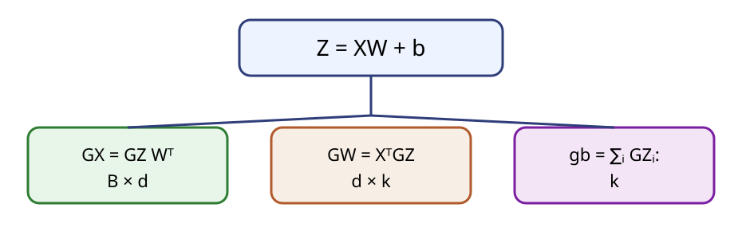
Câu hỏi: Với $B=8,d=5,k=3$, hãy ghi kích thước của $G_X,G_W,G_b$.
Một MLP nhỏ cho hai mẫu và ba lớp đích
Dữ liệu và nhãn
$$X=\begin{bmatrix}1&2\\-2&1\end{bmatrix},\quad Y=\begin{bmatrix}1&0&0\\0&1&0\end{bmatrix}$$
Nhãn nhất vị: mỗi hàng $Y_{i:}$ có đúng một phần tử bằng 1 tại lớp đích.
Tham số
$$W_1=\begin{bmatrix}1&-1\\1&1\end{bmatrix},\ b_1=[0,-0.5]$$
$$W_2=\begin{bmatrix}1&0&-1\\0&1&-1\end{bmatrix},\ b_2=[0,0,0]$$
Tầng ẩn tạo tiền kích hoạt và biểu diễn
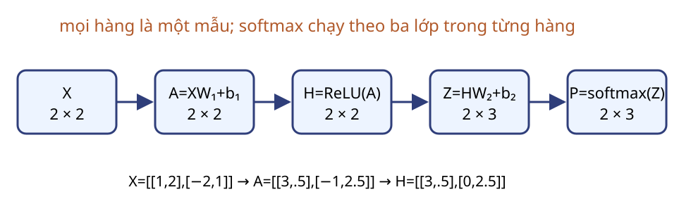
$$A=\begin{bmatrix}3&0.5\\-1&2.5\end{bmatrix},\qquad H=\begin{bmatrix}3&0.5\\0&2.5\end{bmatrix}.$$
Giữ $X$ cho $G_{W_1}$ và giữ $A$ cho mặt nạ ReLU.
Tầng ra tạo điểm số chưa chuẩn hóa
$$Z=HW_2+b_2=\begin{bmatrix}3&0.5&-3.5\\0&2.5&-2.5\end{bmatrix}.$$
Mỗi phần tử $Z_{ic}$ là một điểm số theo trục lớp, chưa phải xác suất. Giữ $H$ cho $G_{W_2}$.
Softmax chuẩn hóa theo trục lớp
$$P_{ic}=\frac{\exp(Z_{ic}-m_i)}{\sum_r\exp(Z_{ir}-m_i)},\qquad m_i=\max_r Z_{ir}.$$
$$P\approx\begin{bmatrix}0.9229&0.0758&0.0014\\0.0754&0.9184&0.0062\end{bmatrix}.$$
Chỉ số $c,r$ chạy trên lớp; mỗi hàng của $P$ có tổng bằng 1.
Entropy chéo ổn định tính từ điểm số
$$\operatorname{LSE}(Z_{i:})=m_i+\log\sum_r e^{Z_{ir}-m_i},\quad \log P_{ic}=Z_{ic}-\operatorname{LSE}(Z_{i:}).$$
$$J=-\frac1B\sum_{i,c}Y_{ic}\bigl(Z_{ic}-\operatorname{LSE}(Z_{i:})\bigr)\approx0.0827.$$
Không tính $\log(\operatorname{softmax}(Z))$ qua một xác suất đã làm tròn.
Đạo hàm cục bộ của softmax ghép các lớp
$$\frac{\partial P_{ir}}{\partial Z_{ic}}=P_{ir}(\delta_{rc}-P_{ic}).$$
$r=c$: $P_{ic}(1-P_{ic})$
$r\ne c$: $-P_{ir}P_{ic}$
Quy tắc chuỗi rút gọn đạo hàm theo điểm số
$$\frac{\partial \ell_i}{\partial P_{ir}}=-\frac{Y_{ir}}{P_{ir}},\qquad \frac{\partial P_{ir}}{\partial Z_{ic}}=P_{ir}(\delta_{rc}-P_{ic}).$$
$$\frac{\partial \ell_i}{\partial Z_{ic}}=\sum_r\frac{\partial \ell_i}{\partial P_{ir}}\frac{\partial P_{ir}}{\partial Z_{ic}}=P_{ic}-Y_{ic}.$$
$$G_Z=\frac{P-Y}{B}.$$
Đạo hàm theo điểm số của ví dụ
$$G_Z\approx\begin{bmatrix}-0.0386&0.0379&0.0007\\0.0377&-0.0408&0.0031\end{bmatrix}.$$
Câu hỏi: Vì sao tổng mỗi hàng của $G_Z$ bằng 0?
Đạo hàm theo tham số tầng ra
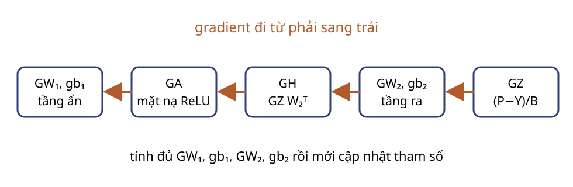
$$G_{W_2}\approx\begin{bmatrix}-0.1157&0.1136&0.0021\\0.0750&-0.0830&0.0081\end{bmatrix}$$
$$G_{b_2}\approx[-0.0009,-0.0029,0.0038]$$
Đạo hàm đi qua tầng ra và ReLU
Dùng $W_2$ cũ
$$G_H=G_ZW_2^\top\approx\begin{bmatrix}-0.0393&0.0372\\0.0346&-0.0439\end{bmatrix}$$Dùng $A$ đã giữ
$$G_A=G_H\odot\mathbb1[A>0]\approx\begin{bmatrix}-0.0393&0.0372\\0&-0.0439\end{bmatrix}$$Đạo hàm theo tham số tầng ẩn
$$G_{W_1}=X^\top G_A\approx\begin{bmatrix}-0.0393&0.1249\\-0.0785&0.0305\end{bmatrix}$$
$$G_{b_1}=\sum_iG_{A,i:}\approx[-0.0393,-0.0067]$$
$X$ đã giữ cung cấp toán hạng cho $G_{W_1}$; mọi gradient đã sẵn sàng trước cập nhật.
Cập nhật sau khi đã tính đủ gradient
$$W_\ell\leftarrow W_\ell-\eta G_{W_\ell},\qquad b_\ell\leftarrow b_\ell-\eta G_{b_\ell},\quad \ell\in\{1,2\}.$$
Với $\eta=0.1$: $(W_1)_{11}: 1\rightarrow1-0.1(-0.0393)\approx1.0039$.
Một bước huấn luyện tách ba loại trạng thái
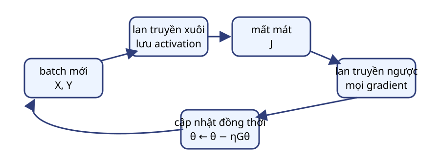
Ghi gradient
Đặt gradient tham số về 0 trước mỗi lô; bật ghi đồ thị khi cần lan truyền ngược.
Chế độ mô hình
Chọn huấn luyện hoặc suy luận theo hành vi của các tầng có trạng thái.
Cập nhật
Chỉ cập nhật trong huấn luyện, sau khi đã có đủ gradient.
Thứ tự một bước: lô mới → xóa gradient cũ → lan truyền xuôi → mất mát → lan truyền ngược → cập nhật.
Kiểm tra bốn lỗi thường gặp
Câu hỏi: Softmax chạy theo trục nào?
Câu hỏi: $G_b$ rút gọn trục nào?
Câu hỏi: Khi nào đặt gradient về 0?
Câu hỏi: Có được cập nhật $W_2$ trước khi tính $G_H$ không?
Gộp các cổng thành một nút sigmoid
$$\sigma(a)=\frac{1}{1+e^{-a}},\qquad \sigma'(a)=\sigma(a)(1-\sigma(a)).$$
Có thể lan truyền qua chuỗi phủ định → mũ → cộng → nghịch đảo, hoặc dùng trực tiếp đạo hàm của nút sigmoid.
Sigmoid làm nhỏ đạo hàm cục bộ khi bão hòa
$$G_a=G_h\,\sigma(a)(1-\sigma(a)).$$
$a\ll0$: $\sigma'(a)\approx0$
$a\approx0$: đạo hàm lớn nhất
$a\gg0$: $\sigma'(a)\approx0$
Phạm vi Bài 02: đạo hàm cục bộ. Gradient triệt tiêu qua mạng sâu và cách xử lý thuộc Bài 03.
Bộ nhớ huấn luyện đổi lấy khả năng tính đạo hàm
Lưu
Đầu vào tầng afin, tiền kích hoạt hoặc mặt nạ ReLU, và đại lượng cần cho mất mát.
Giải phóng
Khi mọi nút phụ thuộc đã hoàn tất lượt ngược, giá trị kích hoạt tương ứng có thể được bỏ.
Lưu ít hơn có thể buộc tính lại; lưu nhiều hơn tăng bộ nhớ.
Sai phân hữu hạn kiểm tra đạo hàm
$$g_j^{\mathrm{num}}=\frac{J(\theta+\varepsilon e_j)-J(\theta-\varepsilon e_j)}{2\varepsilon},\quad \mathrm{err}_{\mathrm{rel}}=\frac{|g_j^{\mathrm{num}}-g_j|}{\max(\tau,|g_j^{\mathrm{num}}|+|g_j|)}.$$
Chọn điểm không nằm tại điểm gãy của ReLU hoặc cực đại; thử vài giá trị $\varepsilon$ quanh $10^{-4}$.
Sai phân trung tâm: độ dốc ước lượng từ hai phép đo với nhiễu đối xứng $\pm\varepsilon e_j$ quanh $\theta$.